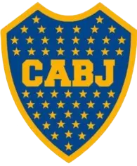
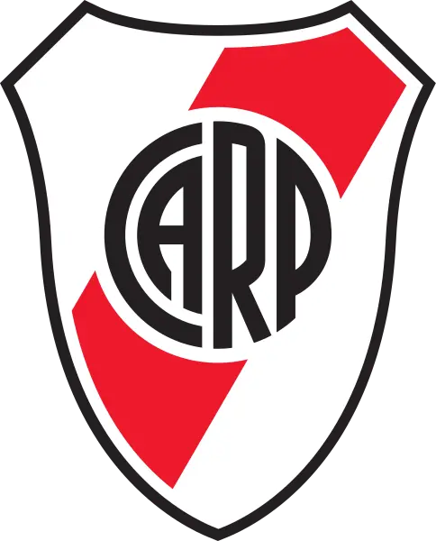
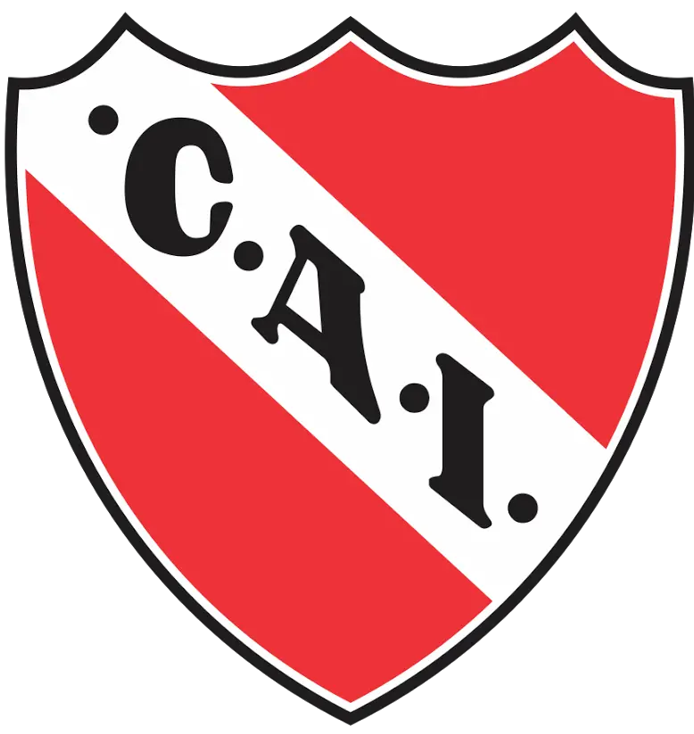
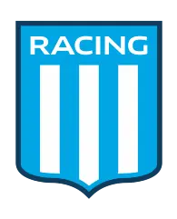
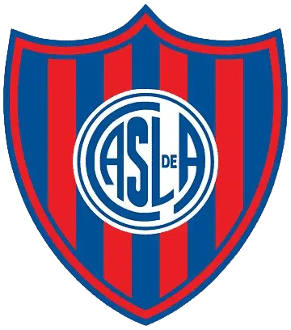

Boca Juniors

"La Boca" es uno de los 47 barrios de la ciudad de Buenos Aires y probablemente el más pintoresco de todos ellos. Está ubicado en la parte Sur de la ciudad, a orillas del Riachuelo, en su desembocadura en el Río de la Plata. Poblado por inmigrantes europeos a principios del siglo XIX, el barrio poseía un aspecto característico, dado por sus casas de chapa, pintadas con múltiples colores, tal cual lo inmortalizada en sus cuadros el pintor Benito “Quinquela” Martín. Hoy, paradoja del destino, el humilde Barrio se ha convertido en una atracción turística internacional, principalmente la llamada “Vuelta de Rocha”, donde se encuentra el mítico pasaje “Caminito”, relacionado con el verso del genial Enrique Santos Discépolo. La fundación de Boca Juniors ocurrió, según relatos de la época nunca bien documentados, en un banco de la Plaza Solís, situada en el Barrio de La Boca, entre las calles Caboto, Suárez, Olavarría y Ministro Brin, el lunes 3 de abril de 1905. Allí 5 muchachos adolescentes: Esteban Baglietto, Alfredo Scarpatti, Pedro Sana y los hermanos Juan y Teodoro Farenga dieron el puntapié inicial a una historia que ya lleva más de 100 años.
River Plate

La historia del Club Atlético River Plate comenzó el 25 de mayo de 1901, cuando de la unión de dos clubes (Santa Rosa y La Rosales) un grupo de 24 muchachos se reunió en Almirante Brown 927 -donde funcionaba la imprenta Francisco Gentile- con el objetivo de dar nacimiento a un nuevo club de fútbol. El nombre fue motivo de discusión para los fundadores: Pedro Martínez propuso River Plate; Carlos Antelo, La Rosales; Livio Ratto, Forward y Bernardo Messina, Juventud Boquense. Se eligió el de River Plate y la institución se comenzó a llamar Club Atlético River Plate. Su primer presidente fue Leopoldo Bard. El fútbol fue desde los comienzos la esencia misma del club y, aunque posteriormente el crecimiento de la institución promovió el desarrollo de otras actividades, aquel permaneció como la disciplina deportiva sobre la cual se sustenta la entidad y la que le valió su reconocimiento a nivel nacional e internacional. River Plate es el equipo que más temporadas disputó en la Primera División del fútbol argentino, con 110 participaciones (22 en el Amateurismo y 88 en el Profesionalismo).
C.A.Independiente

Independiente fue fundado el 1 de enero de 1905 en el barrio de Monserrat, Buenos Aires. El club tuvo sus primeros éxitos en el fútbol local y en 1922 se unió a la Liga Argentina de Football, precursora de la actual Asociación del Fútbol Argentino (AFA). En la década de 1930, Independiente logró su primer título de liga y comenzó a forjar una exitosa historia en el fútbol argentino. Independiente ha tenido un éxito inigualable, tanto a nivel nacional como internacional. En el ámbito local, el club ha conquistado numerosos títulos de la Primera División de Argentina, incluyendo títulos en la era amateur y profesional. Se destacan las épocas de «La Máquina» en los años 40 y la de «Los diablos rojos» en los años 60 y 70, cuando obtuvo una gran cantidad de títulos locales e internacionales. A nivel internacional, Independiente ha dejado su huella como el «Rey de Copas». El club ha ganado la Copa Libertadores en siete ocasiones, en los años 1964, 1965, 1972, 1973, 1974, 1975 y 1984, convirtiéndose en el equipo con más títulos de este torneo en la historia. Además, ha ganado la Copa Intercontinental en dos oportunidades y la Copa Sudamericana en 2010.
Racing Club

La historia de Racing Club comienza el 25 de marzo de 1903 (120 años), siendo el primer equipo de fútbol argentino fundado íntegramente por criollos, tomando los colores de la República Argentina. En la era amateur consiguió 9 campeonatos locales, 7 de ellos en forma consecutiva, siendo el primer equipo del mundo heptacampeón, el único equipo argentino en la historia y el único del continente. También acopió 10 copas nacionales y 3 copas internacionales, a raíz de todos estos logros recibió el apodo popular de «La Academia de Football Nacional», que lo identifica hasta la actualidad. Es considerado como «El Primer Grande», ya que fue el primero de los Cinco grandes del fútbol argentino en consagrarse campeón de liga, de una copa nacional y de una copa internacional. En la era profesional iniciada en 1931, obtuvo otros 9 campeonatos locales más, sumados a otras 6 copas nacionales, y otras 3 copas internacionales para su ya exitoso palmarés. En esta era fue el primer equipo en lograr un tricampeonato local, el primer campeón del mundo argentino, el primer campeón de campeones de América, el campeón de la Copa Libertadores de América más extensa de la historia, el primer campeón de campeones de liga y el primer equipo campeón de la Supercopa Internacional.
San Lorenzo

El Club Atlético San Lorenzo de Almagro es uno de los considerados cinco equipos grandes del fútbol argentino. Fue fundado en el barrio de Almagro de la ciudad de Buenos Aires el primer día de abril de 1908, por iniciativa de un grupo de jóvenes con la colaboración del sacerdote salesiano R.P. Lorenzo Massa. Los autodenominados “Los Forzosos de Almagro”, fueron aconsejados por Lorenzo Massa para que cambien su nombre: “Centinela de Quito”, “El Almagreño”, “Río de la Plata” fueron algunos de los elegidos. Finalmente el seleccionado fue “Club Atlético San Lorenzo de Almagro”, en homenaje al sacerdote, al santo mártir de la iglesia cristiana y a la batalla que le sirvió al General San Martín en su campaña libertadora de América.El 1º de enero de 1915, el equipo ganó la final del torneo de ascenso a 1ª división y desde entonces obtuvo los siguientes campeonatos en la época amateur: 1923, 1924, y 1927, después de dos segundos puestos en 1925 y 1926 y, en la era profesional, los de 1933, 1936 (Copa de Honor), 1946, 1959, 1968, 1972 (Campeonato Metropolitano), 1972 (Campeonato Nacional), 1974 (Campeonato Nacional), 1995 (Torneo Clausura), 2001 (Torneo Clausura) y 2007 (Torneo Clausura). Además, en 1988 y 1991 logró las Liguillas Pre-Libertadores que lo clasificaron para tal evento continental.